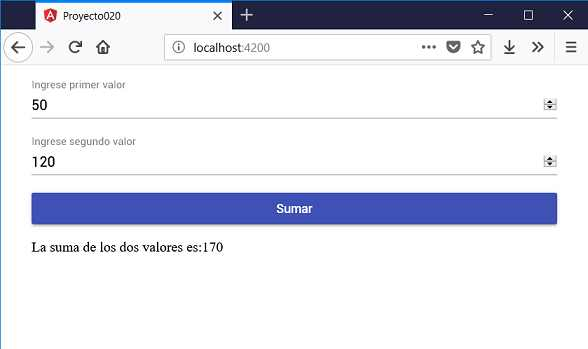

Entre los grupos de componentes fundamentales en Angular Material tenemos los referentes a formularios. Recordemos que la documentación oficial sobre los controles lo podemos encontrar en Componentes en Angular Material
Confeccionaremos una pequeña aplicación para internalizar los pasos en el desarrollo con Angular Material y sus formularios.
Definir un formulario web que permita cargar dos valores numéricos y al presionar un botón mostrar su suma.
Crearemos primero el proyecto
ng new proyecto020
Procedemos a instalar todas las dependencias de Angular Material ayudados por Angular CLI mediante el comando 'add':
ng add @angular/material
Modificamos el archivo 'app.module.ts' donde debemos importar los módulos de Angular Material que requiere nuestro proyecto:
import { BrowserModule } from '@angular/platform-browser';
import { NgModule } from '@angular/core';
import { AppComponent } from './app.component';
import { BrowserAnimationsModule } from '@angular/platform-browser/animations';
import {FormsModule} from '@angular/forms';
import { MatInputModule } from '@angular/material/input';
import { MatButtonModule } from '@angular/material/button';
@NgModule({
declarations: [
AppComponent
],
imports: [
BrowserModule,
BrowserAnimationsModule,
MatInputModule,
MatButtonModule,
FormsModule ],
providers: [],
bootstrap: [AppComponent]
})
export class AppModule { }
Modificamos el archivo 'app.component.ts' con la lógica de nuestra componente que permite sumar dos números ingresados por teclado:
import { Component } from '@angular/core';
@Component({
selector: 'app-root',
templateUrl: './app.component.html',
styleUrls: ['./app.component.css']
})
export class AppComponent {
valor1=0;
valor2=0;
resultado=0;
sumar() {
this.resultado = this.valor1 + this.valor2;
}
}
Codificamos la interfaz visual en el archivo 'app.component.html':
<div class="contenedor">
<mat-form-field>
<input matInput [(ngModel)]="valor1" type="number" placeholder="Ingrese primer valor">
</mat-form-field>
<mat-form-field>
<input matInput [(ngModel)]="valor2" type="number" placeholder="Ingrese segundo valor">
</mat-form-field>
<button mat-raised-button color="primary" (click)="sumar()">Sumar</button>
<p>La suma de los dos valores es:{{resultado}}</p>
</div>
El último archivo que debemos codificar es la hoja de estilo de la componente que se encuentra en 'app.component.css':
.contenedor {
display: flex;
flex-direction: column;
margin:1rem auto;
max-width: 600px;
}
Si ejecutamos ahora la aplicación podemos comprobar cual es la estética de los controles de formulario de Angular Material:
Podemos probar esta aplicación en la web aquí.
Si analizamos primero el HTML debemos agregar la directiva matInput en la etiqueta 'input', además de encerrar entre las marcas 'mat-form-field':
<mat-form-field>
<input matInput [(ngModel)]="valor1" type="number" placeholder="Ingrese primer valor">
</mat-form-field>
El contenido de la propiedad placeholder es la que utiliza Angular Material para mostrar en la parte superior.
Los botones ya lo vimos en conceptos anteriores, recordemos que debemos disponer la directiva mat-raised-button:
<button mat-raised-button color="primary" (click)="sumar()">Sumar</button>
El otro paso que no debemos olvidar es importar los módulos de Angular Material en el archivo 'app.module.ts'.
Hemos utilizado la etiqueta 'input' asignado a la propiedad type el valor 'number', los valores posibles para la propiedad type son: